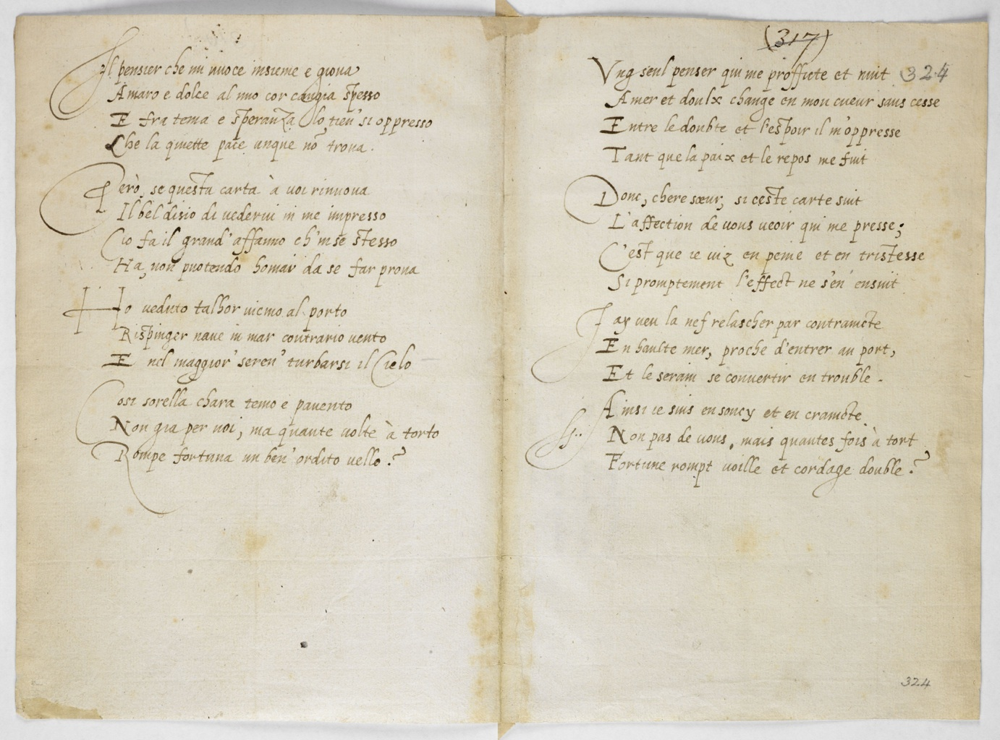

Select versions to display:
Image
Italian Transcription [verso]
Italian Translation
French Transcription [recto]
French Translation
| Images | Italian [verso] | Italian Translation | French [recto] | French Translation |
|---|---|---|---|---|
|
 |
Il pensier che mi nuoce insieme e giova Amaro e dolce al mio cor cangia spesso E fra tema e speranza lo tien’ si oppresso Che la quiette pace unque no[n] troua
Pero’, se questa carta à uoi rinuoua Il bel disio di uederui in me impresso Cio fa il grand’ affauno ch’m ‘se stesso Ha, non puotendo homai da se far proua
Ho ueduto talbor uicino al porto Rispinger naue in mar contrario uento E nel maggior’ seren’ turbar si il Cielo
Cosi sorella chara temo e pauento Non gia per uoi, ma quante uolte à torto Rompe fortuna un ben’ ordito uello? |
The thought which at once harms and helps me Often changing my heart from bitter to sweet And holds it so oppressed between fear and hope, That still peace is nowhere found.
However if this page [addressed] to you renews In me the good desire to see you It will show you the deep concern that I myself Have, that can never show itself
At times I have seen, nearing the port A ship pushed back by contrary winds And the most serene heaven change
So, dear sister I fear and am frightened Not for you, but how many times, unjustly, Does fortune ruin the best laid plans? |
Vng seul penser qui me profficte et nuit Amer et doulx change en mon cueur sans cesse Entre le doubte et l’espoir il m’oppresse Tant que la paix et le repos me fuit
Donc, chere soeur, si ceste carte suit L’affection de uous ueoir qui me presse; C’est que ie uiz en peine et en tristesse Si promptement l’effect ne s’en ensuit
Jay ueu la nef relascher par contraincte En haulte mer, proche d’entrer au port, Et le serain se conuertir en trouble
Ainsi ie suis en soucy et en craincte Non pas de uous, mais quantes fois à tort Fortune rompt voille et cordage double ? |
A single thought, that fortifies and is hurtful to me, Bitter and sweet, changes ceaselessly in my heart, Between doubt and hope, it oppresses me, So much so that peace and rest fly from me.
So, dear sister, if this document stresses, Through our mutual affection, my pressing desire to see you, It is that I live in pain and distress The result of which ensues so swiftly.
I have seen a ship disabled On the high seas, near the harbour entrance, And calm transform into chaos.
Thus, I am anxious and fearful Not of you, but how many times wrongly, Fortune shreds the sail and snaps the hawser. |
{kind=link}